전공자의 지도력
용인대학교 태권도학과 석사 관장이 직접 수업에 들어갑니다. 동작 하나를 가르쳐도 왜 그렇게 하는지 근거가 있습니다.
태권도를 무서워하던 아이가 수업 한 번에 도복을 입고 나섭니다. 신대방동 강담태권도는 유치부 적응부터 국기원반·시범단, 키성장 줄넘기까지 아이의 지금 단계에 맞는 수업을 설계합니다.
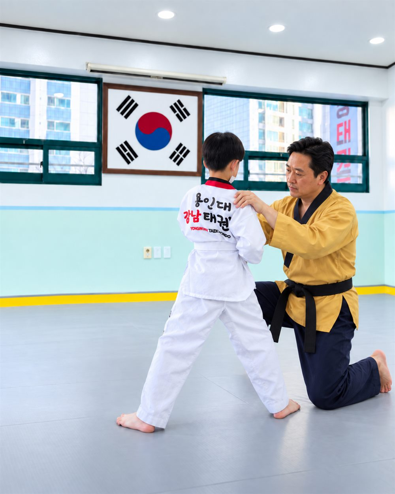
신대방동 · 보라매실제 학부모님들이 남겨주신 후기에서 가장 많이 반복된 이야기를 그대로 정리했습니다.
용인대학교 태권도학과 석사 관장이 직접 수업에 들어갑니다. 동작 하나를 가르쳐도 왜 그렇게 하는지 근거가 있습니다.
유치원 버스에서 아이를 바로 인계받아 도장까지 동행합니다. 승하차 상황을 실시간으로 알려드려 맞벌이 가정도 안심입니다.
태권도만 하지 않습니다. 화·목 전문 줄넘기반과 토요 줄넘기반을 따로 운영해 체력과 키성장을 함께 잡습니다.
6~7세 첫 태권도라면 등록을 서두르지 않습니다. 아이가 도장에 충분히 익숙해진 뒤 시작할 수 있도록 미리 함께합니다.
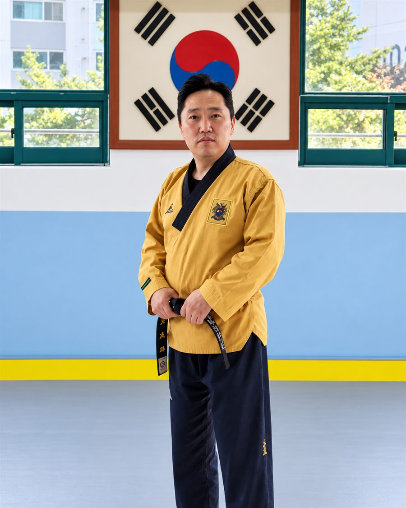
태권도의 본고장 용인대학교에서 이론과 실기를 함께 공부했습니다. 그 기준을 매일의 수업에 그대로 적용합니다.
용인대학교 태권도학과 석사
강담태권도 관장 · 신대방동 보라매롯데낙천대아파트 상가 2층
유치부 · 초등부 정규반, 국기원 승단반, 시범단, 전문 줄넘기반 직접 지도
관장 + 사범 체제의 젊은 지도진 구성
“처음부터 잘하는 아이는 없습니다. 도복을 입고 도장 문을 여는 것부터가 시작이고,
저는 그 첫걸음이 무섭지 않도록 옆에 서 있는 사람이고 싶습니다.”
— 강담태권도 김지환 관장
아이의 나이와 목표에 따라 반이 나뉘어 있습니다. 어느 반이 맞을지는 상담 때 함께 정해드립니다.
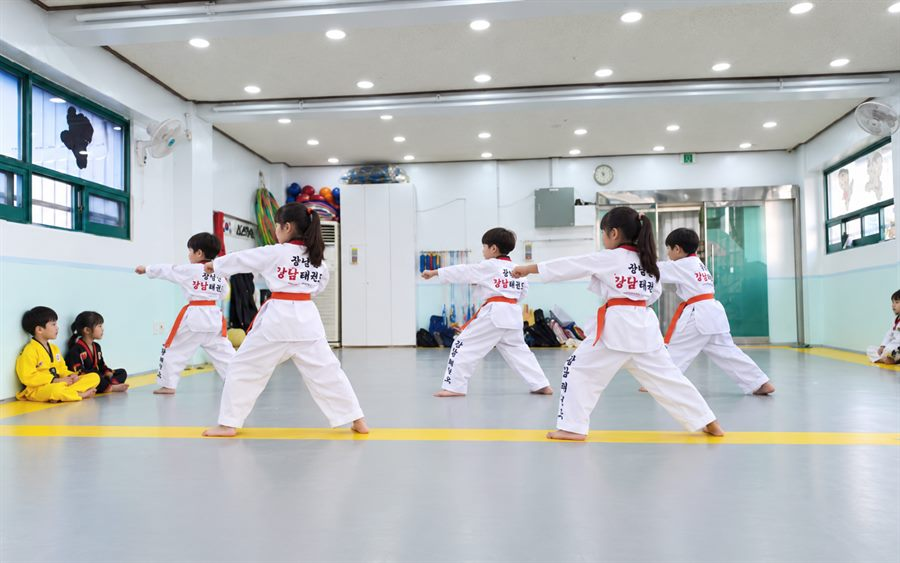
유치원 하원 직후 시작하는 반입니다. 예절과 기본 자세를 놀이처럼 익히며, 첫 태권도가 즐거운 기억이 되도록 진행합니다.
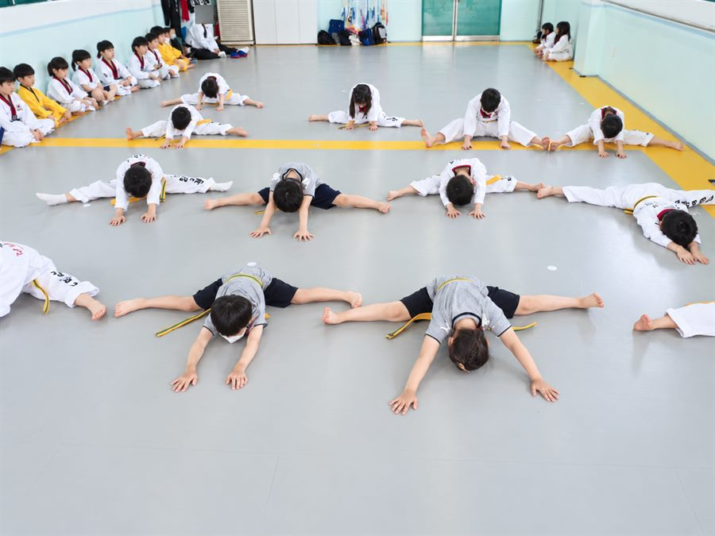
하교 후 이어지는 초등부 정규반. 품새·발차기 기본기를 정확한 자세로 다지고 체력을 함께 끌어올립니다.
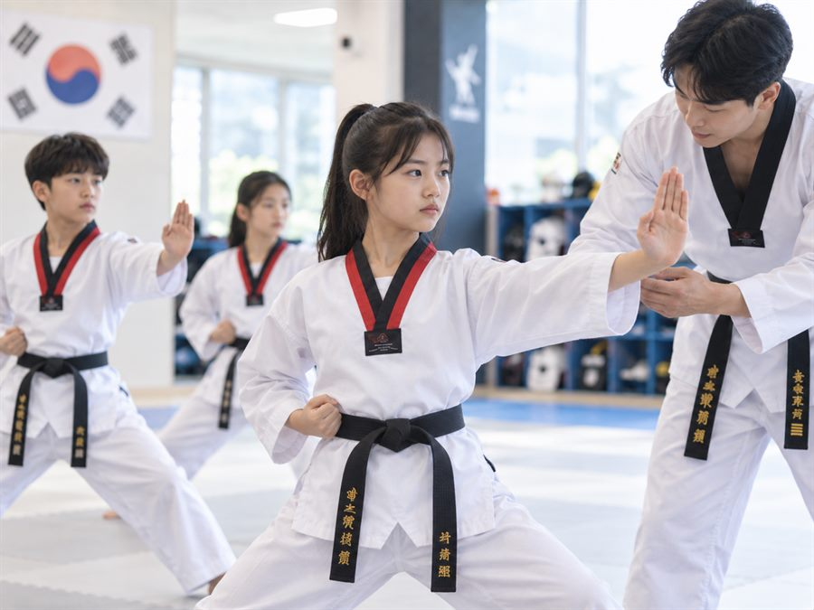
국기원 승단 심사를 준비하는 심화반입니다. 품새 완성도와 태도를 함께 점검하며 단증까지 책임지고 이끕니다.
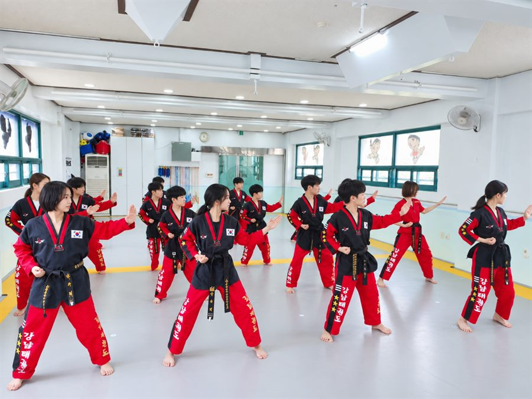
격파·품새 시범을 준비하는 반. 무대에 서는 경험을 통해 자신감과 책임감이 눈에 띄게 달라집니다.
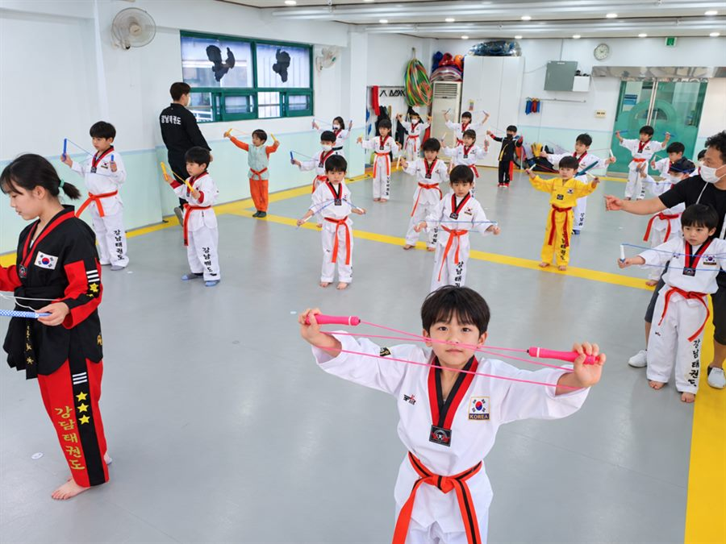
줄넘기만 집중적으로 다루는 반입니다. 아이 수준에 맞춰 단계별로 기술을 늘려가며, 키성장에 필요한 점프 자극을 꾸준히 줍니다.
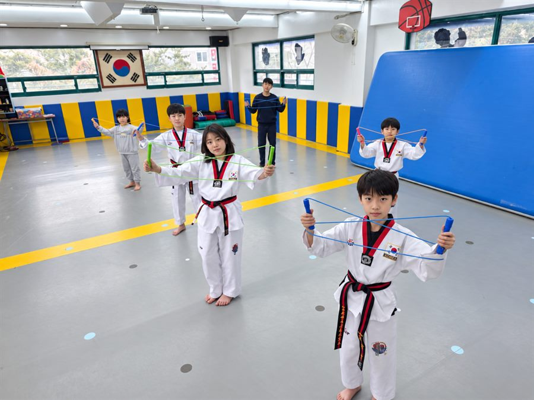
매주 토요일 오전 10시~11시 한 시간. 평일에 시간이 어려운 아이도 주말에 체력을 챙길 수 있습니다.
하원·하교 시간에 맞춰 반을 배정해 드립니다. 아래는 기본 운영안이며 상담 시 조정 가능합니다.
| 시간 | 월 | 화 | 수 | 목 | 금 | 토 |
|---|---|---|---|---|---|---|
| 10:00–11:00 | — | — | — | — | — | 토요 줄넘기 |
| 1시부 | 유치부 · 초등부 | — | — | — | 유치부 · 초등부 | — |
| 2시부 | 유치부 · 초등부 | — | ||||
| 3시 30분부 | 유치부 · 초등부 | — | ||||
| 5시부 | 유치부 · 초등부 | — | ||||
| 6시 10분부 | 국기원반 | — | ||||
| 7시부 | 시범단 | — | ||||
※ 1시부부터 5시부까지는 유치부와 초등부가 함께 수업합니다. 아이의 하원·하교 시간에 맞춰 반을 선택하시면 됩니다.
※ 1시부 수업은 월·금요일만 운영하며, 화·수·목요일은 2시부부터 시작합니다.
※ 전문 줄넘기반은 화·목요일에 별도 편성됩니다. 정확한 시간은 상담 시 안내드립니다.
※ 반 정원이 마감되면 대기 등록으로 안내드립니다.
추석 연휴 휴관 안내 — 9월 24일(목)부터 9월 26일(토)까지 휴무이며, 9월 28일(월)부터 정상 수업합니다.
도복비·심사비 등 별도 비용은 상담 시 투명하게 안내드립니다.
주 3회 정규 수업. 다른 학원 일정과 병행하는 아이에게 알맞습니다.
주 3일과 만 원 차이로 매일 수련할 수 있습니다. 등하원 픽업이 필요한 가정에 알맞습니다.
줄넘기 기술을 단계별로 배우는 전문반. 태권도반과 병행 등록도 가능합니다.
오전 10시~11시 주말 단일반. 평일 수업이 어려운 아이에게 알맞습니다.
통창으로 햇빛이 들어오는 밝은 수련장입니다. 벽면 전체에 안전 패드를 시공했습니다. 언제든 오셔서 수업을 보고 가세요.
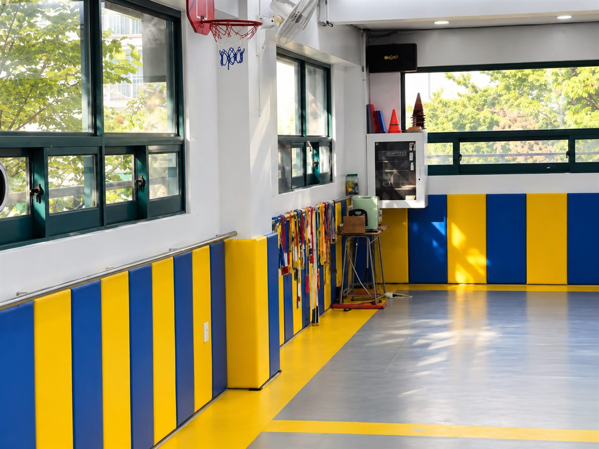
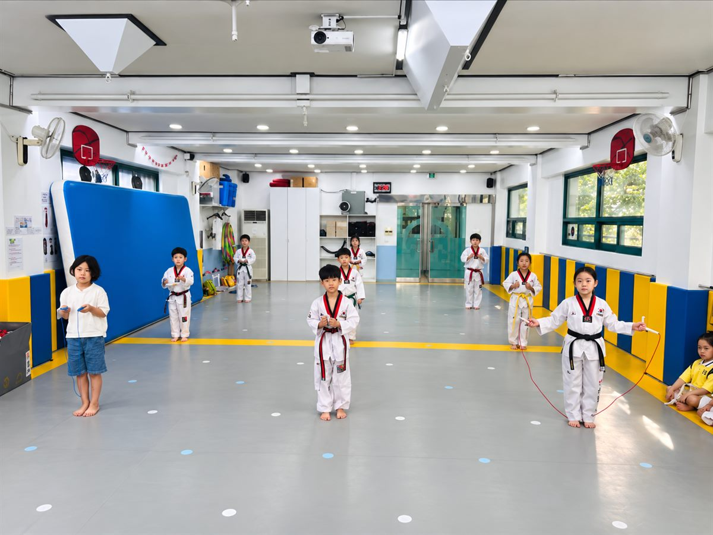
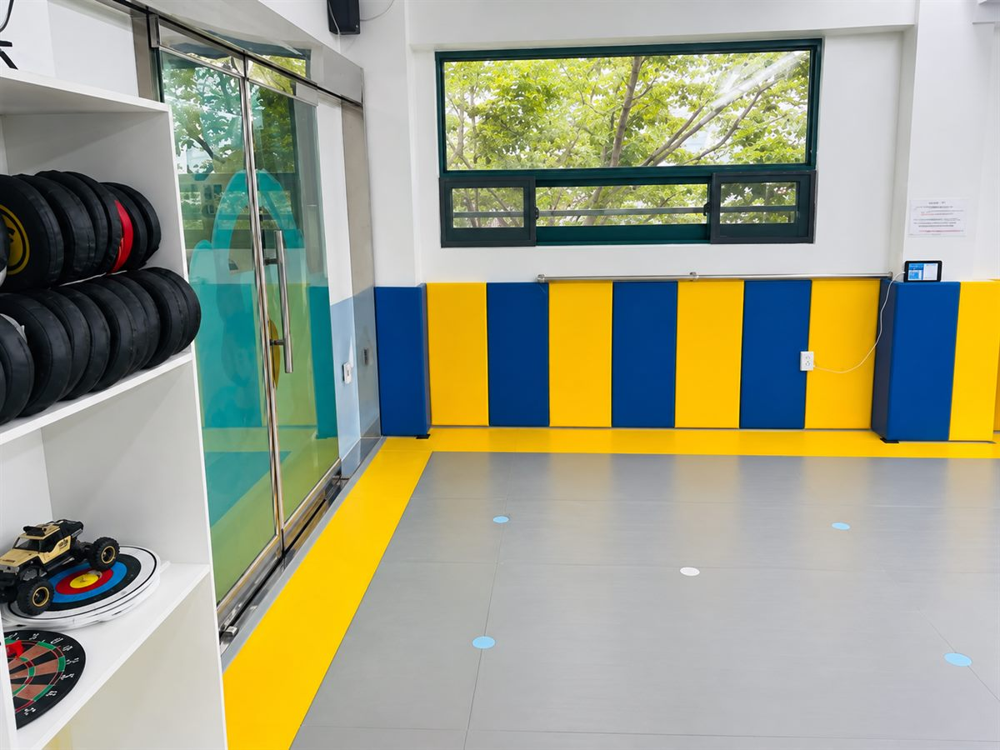
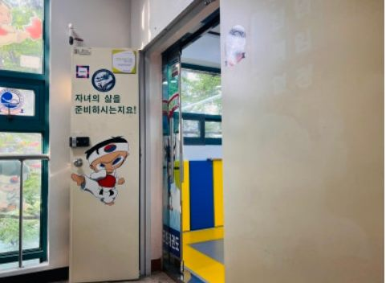
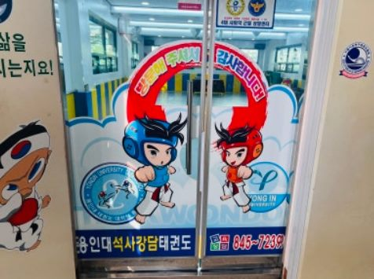
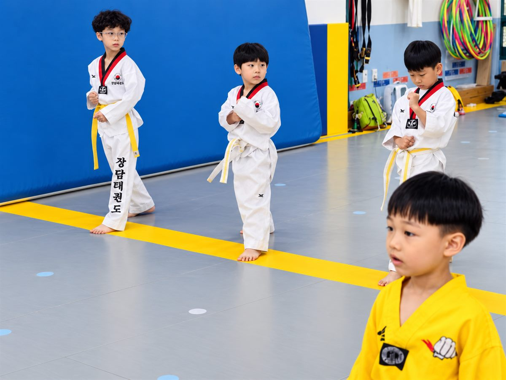
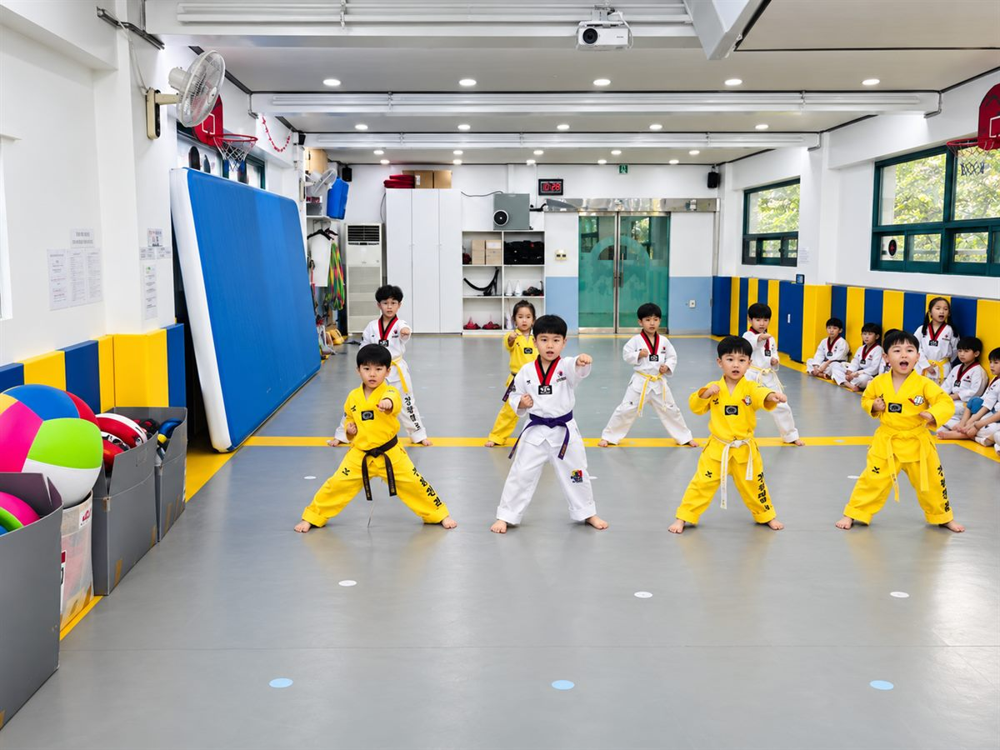
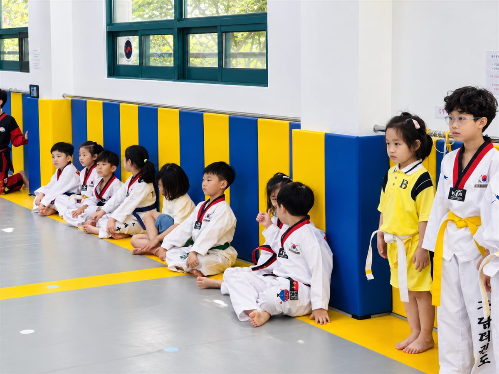
네이버 플레이스에 남겨주신 실제 후기입니다.
관장님 너무 친절하시고, 아이도 너무 좋아해요~~ 아이가 6세라 아직 어린데 등록 전에 미리 충분히 적응할 수 있도록 도와주셨어요! 유치원 버스에서 바로 데리고 가주시고, 사범님도 넘 좋으십니다! 집 앞에 있어 너무 좋네요~!
초등학교 입학을 앞두고 체력 증진, 등하교 픽업 등을 고려해 태권도 학원을 비교하고 선택했습니다. 여자아이라 거부감이 있던 아이였는데 한 번 수업 받고는 바로 도복을 입고 가겠다고 할 정도로 흥미 있어 하고, 사부님도 재미있다며 좋아하네요. 등하원 픽업도 실시간으로 알려주셔서 마음이 놓입니다 :)
6살 아이 첫 태권도라 걱정 많았는데 세심하게 살펴주셔서 맘 놓고 보내는 중입니다. 무얼 열심히 하는지 다녀오면 밥을 두 그릇씩 먹어서 아주 마음에 들어요. 또래 친구들이 많이 오면 좋겠네요 😊
유치부는 6세부터 다니는 아이들이 많습니다. 첫 태권도라 걱정되신다면 등록 전에 도장에 미리 와서 적응하는 시간을 충분히 드리니 편하게 말씀해 주세요.
네. 유치원 버스에서 아이를 바로 인계받아 도장까지 동행하고, 등하원 상황은 보호자님께 실시간으로 알려드립니다. 노선과 시간은 상담 시 확인해 드립니다.
가능합니다. 화·목 전문 줄넘기반(월 90,000원)과 매주 토요일 오전 10시~11시 토요 줄넘기반(월 50,000원)을 단독으로 등록하실 수 있고, 태권도반과 병행도 가능합니다.
회비 차이가 월 1만 원(180,000원 / 190,000원)이라 등하원 픽업이 필요한 가정은 대부분 주 5일을 선택하십니다. 아이 체력과 다른 학원 일정을 함께 보고 상담 때 정해드립니다.
네이버 예약에서 1일 체험수업을 신청하시거나 0507-1307-7239로 전화 주시면 됩니다. 체험은 정규 수업에 그대로 참여하는 방식이며, 편한 복장으로 오시면 됩니다.
서울 동작구 여의대방로10길 38, 보라매롯데낙천대아파트 상가 2층입니다. 보라매공원역 2번 출구에서 약 643m, 보라매 파크빌 102동 맞은편입니다.
체험 수업은 무료이며, 등록을 재촉하지 않습니다. 아이에게 맞는 도장인지 확인하는 자리로 편하게 오세요.
네이버 예약으로 바로 신청하실 수 있습니다.
서울 동작구 여의대방로10길 38
보라매롯데낙천대아파트 상가 2층
평일 12:00 오픈 · 마지막 수업 7시부
토요일 10:00–11:00 줄넘기반 / 일요일 휴무원하시는 항목을 고르시면 네이버 예약으로 연결됩니다. 예약이 접수되면 관장님이 확인 후 연락드립니다.
예약이 어려우시면 전화 주셔도 됩니다. 수업 시간을 피해 주시면 더 자세히 안내드립니다.
보라매초 · 신대방동 인근이라면 언제든 편하게 들러주세요.